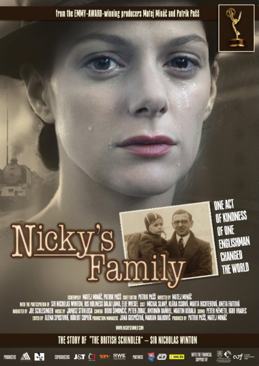

Sir Nicholas Winton đã làm thay đổi thế giới như thế nào?
669 trẻ em — phần lớn là người Do Thái — đã thoát khỏi Thảm họa Diệt chủng nhờ chiến dịch của Winton.
Ngày nay, con cháu của những trẻ em được cứu sống trên khắp thế giới — tạo nên một "gia đình Winton" đặc biệt.
Câu chuyện của Winton được đưa vào sách giáo dục ở nhiều quốc gia, trở thành tấm gương về lòng nhân ái khiêm nhường.
Phim tài liệu Nicky's Family (2011) đoạt giải Emmy, cùng nhiều sách, phim và vở kịch về cuộc đời ông.

Poster phim tài liệu "Nicky's Family" (2011) — đoạt giải Emmy
Năm 2009, đoàn tàu "Winton Train" đã chạy lại hành trình Praha – London đúng 70 năm sau chuyến tàu đầu tiên, với sự tham gia của Winton và nhiều người được ông cứu. Sự kiện này thu hút sự chú ý của truyền thông toàn cầu và một lần nữa khẳng định di sản của ông.
Năm 2014, bộ phim Nicky's Family được công chiếu rộng rãi, giành giải Emmy và giúp câu chuyện của Winton đến với thế hệ trẻ. Tại Cộng hòa Séc, ngày 19/05 — sinh nhật của Winton — được nhiều người coi là ngày tưởng nhớ những người đã cứu giúp người Do Thái trong Thảm họa Diệt chủng.
Nếu không có Winton, 669 trẻ em — và hơn 6.000 hậu duệ của họ — có thể đã không tồn tại. Những gia đình, cộng đồng và thế hệ được sinh ra từ những đứa trẻ đó sẽ không bao giờ xuất hiện. Đây không phải là một khẳng định chắc chắn về điều gì sẽ xảy ra, mà là một lập luận dựa trên những đóng góp thực tế của ông: mỗi sinh mạng được cứu là một thế giới được giữ lại.
Quan trọng hơn, Winton để lại một bài học về việc một cá nhân có thể làm gì khi dám hành động. Ông không có quyền lực chính trị, không có tổ chức hậu thuẫn, không có tiền bạc dư dả — nhưng ông có ý chí và lòng nhân ái. Nếu không có tấm gương đó, có lẽ nhiều người ngày nay sẽ nghĩ rằng "một cá nhân không thể thay đổi được gì" — và đó mới là mất mát lớn nhất.